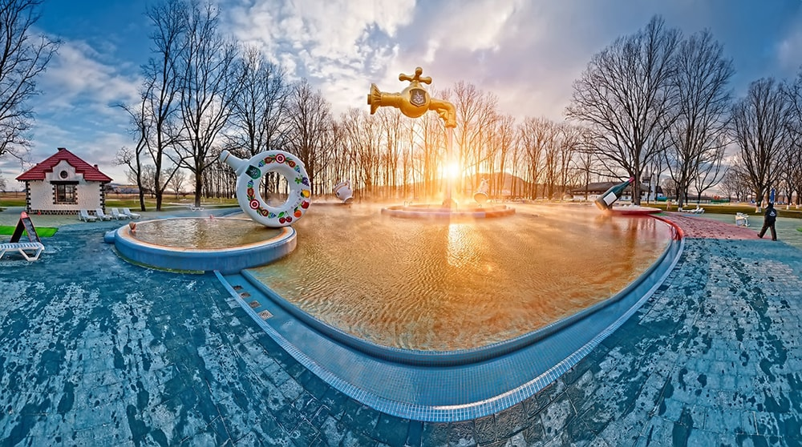
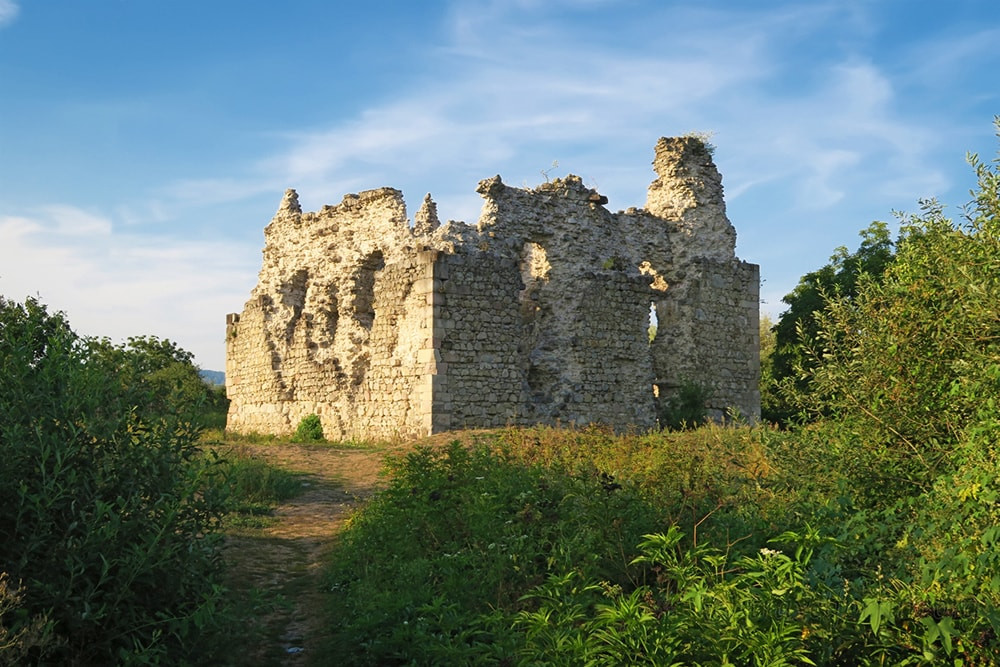
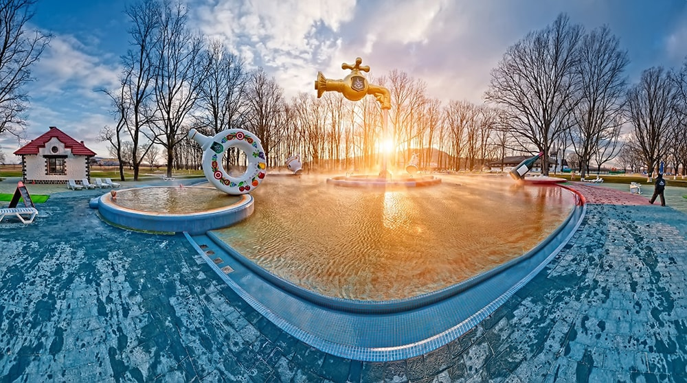
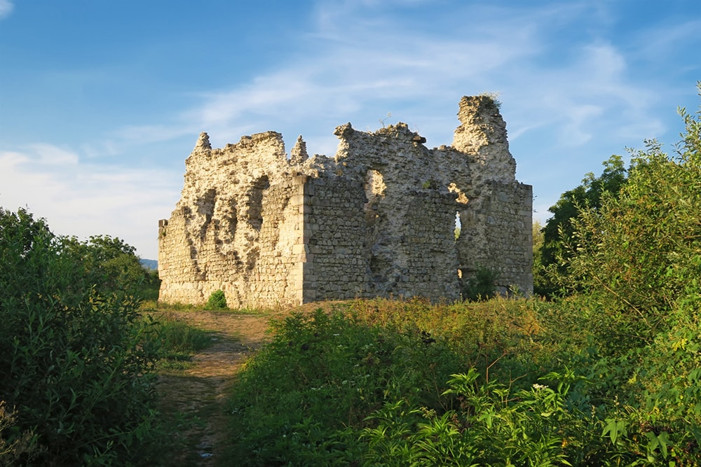

⭐ Активні тури у пошуках емоцій ⭐
Озеро Синевир
Район Національного природного парку «Синевир» - це казковий куточок прекрасної природи. Це місце сили і найзагадковіша визначна пам'ятка Західної України. Саме тут, захована в густих хвойних лісах Карпат, знаходиться справжня природна перлина і одна з візитівок смарагдових Карпат – озеро Синевир, яке вражає своїми кришталево чистими і глибокими водами.
Мальовнича Колочава
Неподалік від Синевиру знаходиться ще одна туристична родзинка Закарпаття. Мальовнича Колочава - одне з найдовших сіл в Україні, його довжина складає 15 км. Але знаменита Колочава не лише через це. Карпатська глибинка може похвалитися мінеральними джерелами, неймовірними краєвидами на гори та давньою історією, адже перша письмова згадка про нього датується 1463 р.
Термальні басейни Закарпаття
На Закарпатті можна і добре та цікаво відпочити, і покращити своє здоров'я, приймаючи ванни у термальних джерелах. Цей мальовничий куточок є лідером в Україні по кількості бальнеологічних курортів, тут знаходиться понад 50 термальних джерел різного роду мінералізації. А найбільш популярні термальні курорти розташовані в Берегово, Косино та Велятино. Село Довгий та місто Мукачеве також славляться своїми цілющими водами.
Середнянський замок
Середнянський замок - Замок ордену Тамплієрів стоїть за 20 км від Ужгорода, в селищі Середнє, від якого і пішла назва самого замку. Коли в середні віки знаменитий чернечий орден отримав право торгувати сіллю з Солотвина, яка в ті часи була дорогоцінним крамом, тамплієри швидко побудували вздовж всього «соляного шляху», що з’єднував Прикарпаття та Європу, укріплення для розміщення митних постів. Там же знаходились невеликі військові гарнізони, які охороняли ту дорогу. Середнянський замок, а точніше його руїни, одна з таких оборонних споруд.

 

Посилання на активні тури і
відпочинок
Гарячі тури


Посилання на активні тури і
відпочинок
Гарячі тури
| Тури | Область України |
|---|---|
| Львівська область | |
| Івано-Франківська область | |
| Чернівецька область | |
| Закарпатська область |
Перед подорожжю:
- Перевірити погоду
- Зареєструватися на рейс
- Роздрукувати квитки
- Звільнити пам'ять для фото
- Завантажити карти/додатки
- Завантажити фільми/книги в дорогу
- Поповнити рахунок для роумінгу
- Зарядити гаджети
Найважливіше:
- Паспорт
- Квитки
- Гаманець
- Телефон
- Зарядка
- Павербанк
Перед виходом з дому:
- Комунальні послуги
- Перевірити крани/перекрити воду, перевірити чи виключені світильники/люстри
- Техніка
- Вимкнути всі прилади
- Квитки
- Перевірити квитки, документи
- Безпека
- Зачинити всі вікна, двері
Одяг, взуття, аптечка, косметичка
- Одяг
- Шкарпетки, білизна
- Футболки
- Штани/джинси
- Cветр
- Куртка, пальто - залежно від сезону
- Взуття - залежно від сезону
- Аптечка
- Знеболювальне
- Жарознижувальне
- При отруєннях
- При укусів
- Від застуди
- Від комарів
- Косметичка
- Зубна паста і щітка
- Гребінець
- Дезодорант
- Засоби для обличчя
- Засоби для тіла